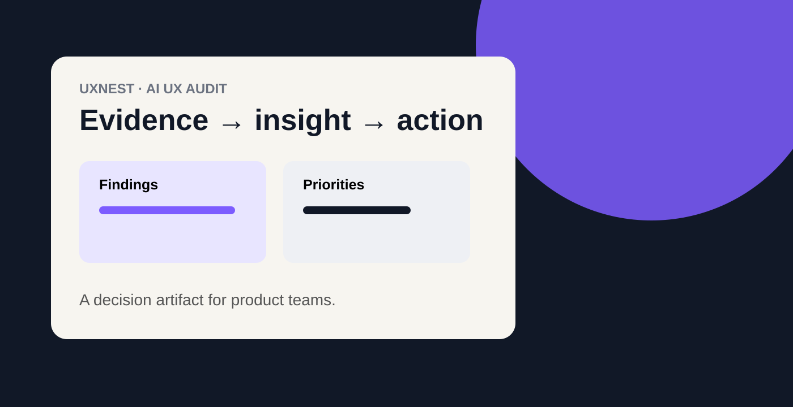

The challenge was not generating UX feedback. It was making feedback useful to a team.
Traditional audits can produce long lists of issues that are difficult to compare, prioritize or socialize with product and engineering. UXNest starts with screens, PDFs or a URL and turns the evidence into a structured experience review.
The product opportunity was therefore bigger than AI-generated critique: create a repeatable workflow that helps a team see the same evidence, understand the reasoning and decide where attention should go.
My role: define the product behavior, not just the interface
I approached UXNest as a product-design problem spanning the input experience, analysis model, finding structure, prioritization and stakeholder communication. I focused on the user's primary job, the information architecture behind an audit, the points where AI needs to explain itself, and how findings should move into a real team conversation.
That leadership lens keeps the AI capability subordinate to the workflow. The product succeeds when a designer or product leader can move from evidence to a defensible decision—not when the system simply produces more text.
Strategy: make the workflow inspectable
The experience follows a deliberate progression: provide evidence → analyze → review findings → prioritize → communicate. Each stage has a clear purpose so users can understand what the system is doing and where human judgment belongs.
Accept the evidence a team already works with instead of forcing a new research format.
Organize observations against recognizable UX dimensions so recommendations have context.
Turn findings into priorities and a stakeholder-ready artifact rather than an undifferentiated report.
Trust is a product requirement
AI assistance changes the UX standard. Users need to understand what was analyzed, what the system believes, and where the result should be treated as a recommendation rather than fact. The prototype therefore makes system state and product boundaries part of the experience.
The project documentation also recognizes implementation realities such as account state, quotas and server-side verification. I treat those constraints as part of product design because trust is shaped by the whole system, not only the output screen.
Leadership impact
UXNest demonstrates how I lead emerging-product work: identify the human decision behind the technology, create a workflow around that decision, make AI behavior understandable, and give cross-functional teams a shared artifact they can use to move forward.